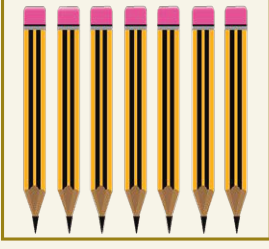
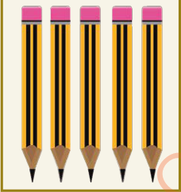

7.
Carefully study the following pictures and compare the number of the objects:

Box A
Box B(a) How many pencils are in box A?
(b) How many pencils are in box B?
(c) Which box has more pencils than the other?
(d) Use the symbols =, < or > to compare the number of pencils.
Sequences of whole numbers
Numbers can be arranged in a defined pattern. When whole numbers are arranged in a defined pattern, they form a sequence. It is possible to determine the next numbers in a given sequence.
Carefully study the number of bottle tops in group A, B and C.